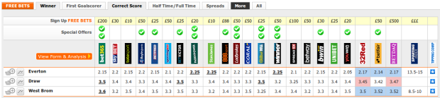
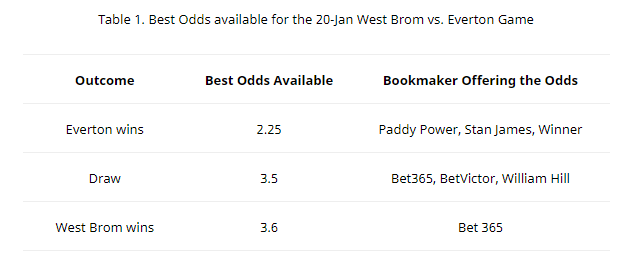
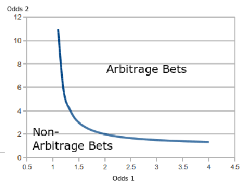

Arbitrage betting is the system of betting on “sure bets” or bets that will guarantee the bettor a profit whatever the outcome of a certain sporting event. Arbitrage betting exploits the fact that bookmakers may have different opinions, or at times have errors, in calculating the probability of a certain event happening. Usual profit of the people who use arbitrage betting (called arbers) is 2%.
How to Spot Arbitrage Bets
You can spot an arb, or an arbitrage bet, by looking at the highest odds given among several bookmakers. There are several websites where you can see the latest odds given by several bookmakers. An example is oddschecker.com. In Figure 1, the compilation of the odds available for the West Brom vs. Everton match (1×2 market) on 20-Jan-14 is shown.

From Figure 1, the best odds for the said match are tabulated in Table 1. First, we find the total market value of the odds using this formula:
Market = 1/Outcome 1 + 1/Outcome 2 + 1/Outcome 3
Market = 1/2.25 + 1/3.5 + 1/3.6 = 100.79%
As of the moment, the total market value of the odds is 100.79%. If the market value drops below 100%, it creates an arb and will be a sure profit for the bettor if he bets on all events. If for example, Paddy Power, Stan James or Winner add 0.1 to their current odds of Everton winning, the market value becomes:
Market = 1/2.35 + 1/3.5 + 1/3.6 = 98.60%This gives the bettor a 1.10% profit margin, no matter the result of the game. This is called the arbitrage percentage. We may write this condition in a formula for an event with N event outcomes:
1/O1 + 1/O2 + ... + 1/ON < 1where O1 is Outcome 1, O2 is Outcome 2 and ON is Outcome N. For a sporting event with only two outcomes, we can easily derive a formula that we can use to spot an arb (assuming that the odds are always positive):
1/O1 + 1/O2 < 1
1/O1 < 1 - 1/O2
O1 < (1 - 1/O2)⁻¹Plotting this formula in Figure 2, we can see that all odds combinations under the curve are non-arb bets. In contrast, all odds combinations over the curve are arbitrage bets.

Calculating Profit and Individual Bets
After spotting an arbitrage, one must place a bet in order to profit from this. We may calculate the individual bets using this formula:
Individual Bet = (Investment / ON) / Total Market %For our initial example, we use the 1×2 odds = 2.25–3.5–3.6 which is a non-arbitrage bet. The calculator will indicate that this is a non-arbitrage bet and will tell the loss (negative profit) that will occur. If in case the market moves and the Home Odds improve to 2.35, we can see that the profit will be 1.10% and the total win for a $1,000.00 investment is $11.10. The individual bets are calculated using the formula above.
Potential Pitfalls of Arbitrage Betting
There are several pitfalls that may not guarantee a profit in arb bets. Here are some potential pitfalls in arbitrage betting:
- Mispriced Odds — If in case the odds difference is due to errors of the bookmaker (i.e., the odds placed were 7/3 instead of 3/7), the bookmaker may not honor the bets placed.
- Betting Rules — Different bookmakers offer different rules in betting. Also, different sports offer different betting rules. The lack of knowledge of these rules may hinder a sure profit for the arber.
- Stake Restrictions (Limited Accounts and Maximum Bets) — There are bookmakers that limit the users to a certain number of bets and have betting interval limits. Knowing these bookies is crucial in arbitrage betting since this may limit your chances of betting on them if the need arises. Also, the arber must know the maximum betting limit. There is really no point in betting $1,000 on one side of the arb, and then finding out that the other bookmaker has a $100 bet limit.
- Commissions — Bookmakers like Betfair have a commission fee that must be incorporated in the calculations.
- Odds Change — Odds change very quickly. It may be possible that you have already placed an odd on one side of the arb and then the odds on the other side of the arb have already changed.